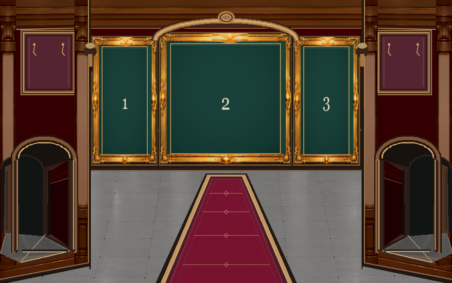
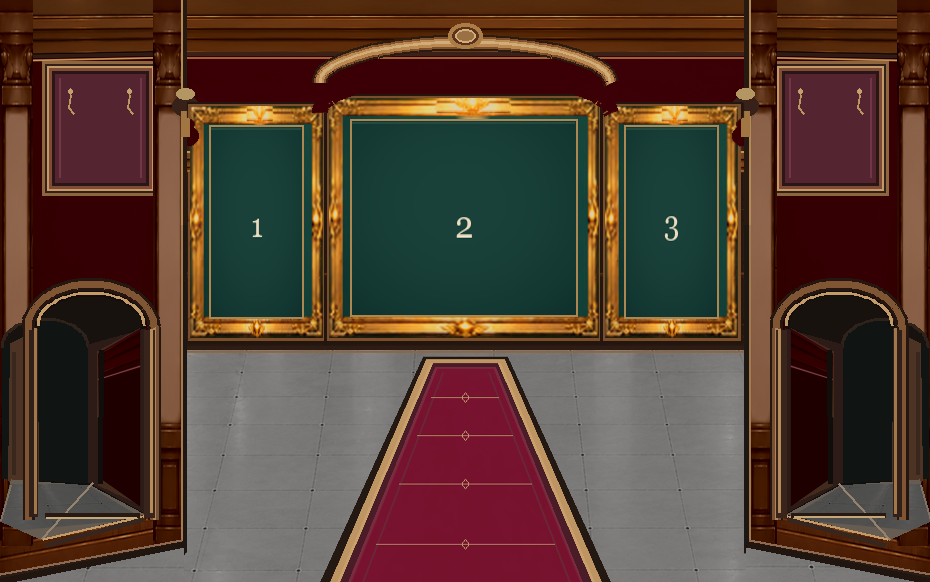
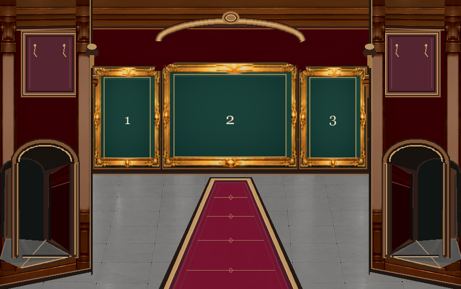

A｜上端固定・下へ60px延長（現状の方向）
額縁が大きく目立つ一方、左右がかなり縦長になります。


左右 133 × 262 ／ 中央 270 × 270。上位置固定、純粋に下だけ拡張
画像生成した架空の完成図ではなく、v14のゲーム用金額縁・壁・石床・絨毯を使った実素材比較です。3枚の下端はすべて同じ「338px」に揃えています。
額縁が大きく目立つ一方、左右がかなり縦長になります。

左右 133 × 262 ／ 中央 270 × 270。上位置固定、純粋に下だけ拡張
中央の横長感を残しながら、展示全体を下へ大きく広げる中間案です。

左右 133 × 232 ／ 中央 270 × 240。元より大きく、横長感も一部維持
写真の形は元通り。ただし額縁自体の面積は増えません。

左右 133 × 202 ／ 中央 270 × 210。比率維持。ただし上の空間が広くなる
+60pxにする前の額縁位置とサイズです。

元の下端 278px ／ 今回の比較はすべて下端 338px。
| 比較 | 下端 | 上端 | 元の縦横比 |
|---|---|---|---|
| A：下へ延長 | 338px | 固定 | 崩れる |
| C：折衷 | 338px | 30px下げる | やや変わる |
| B：比率を保持 | 338px | 60px下げる | 維持 |
厳密に「上端固定・下へ60px延長・元の縦横比のまま」を全部同時に満たすと、今の展示壁幅に収まりません（必要な横幅は約700px、実際の背面壁は約562px）。そのため今回は建築構造を変えずに比較しています。
いずれも未承認の比較用です。承認済みE案、ゲーム本体、移動判定、保存データ、Gitのissue/mainは変更しません。